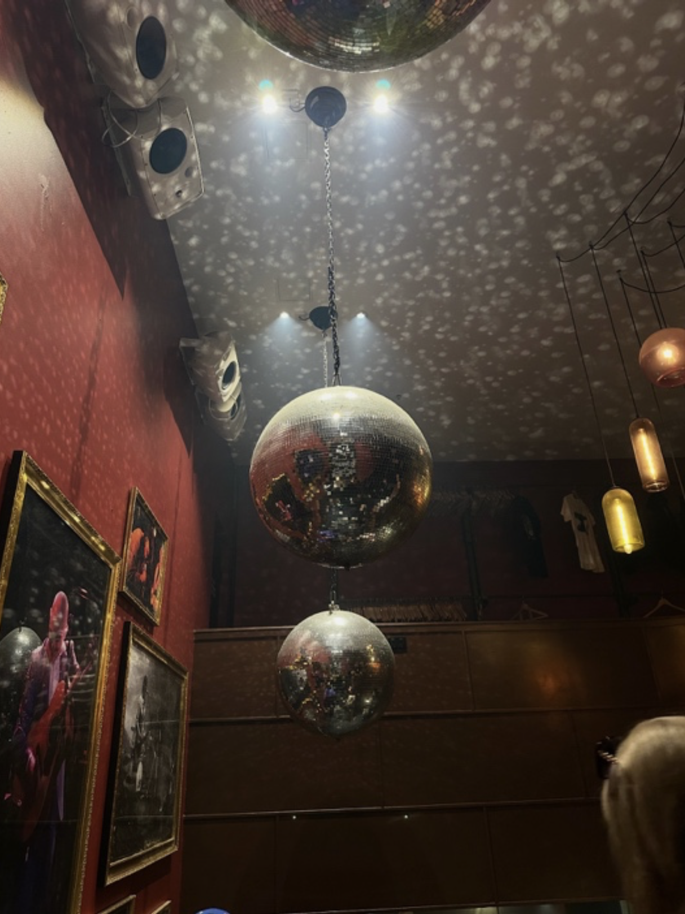
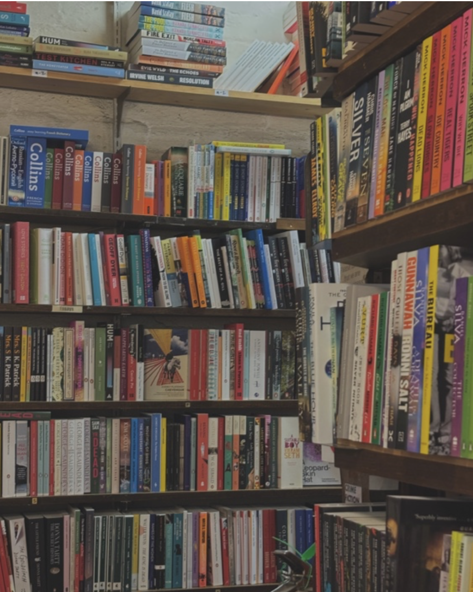
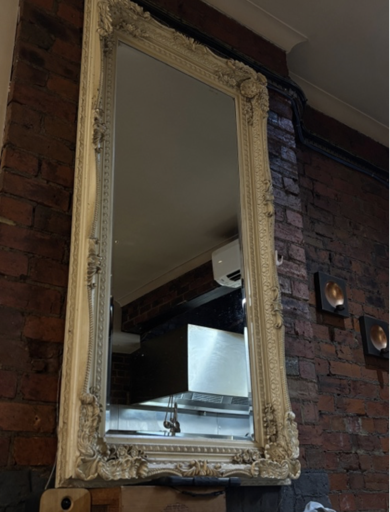
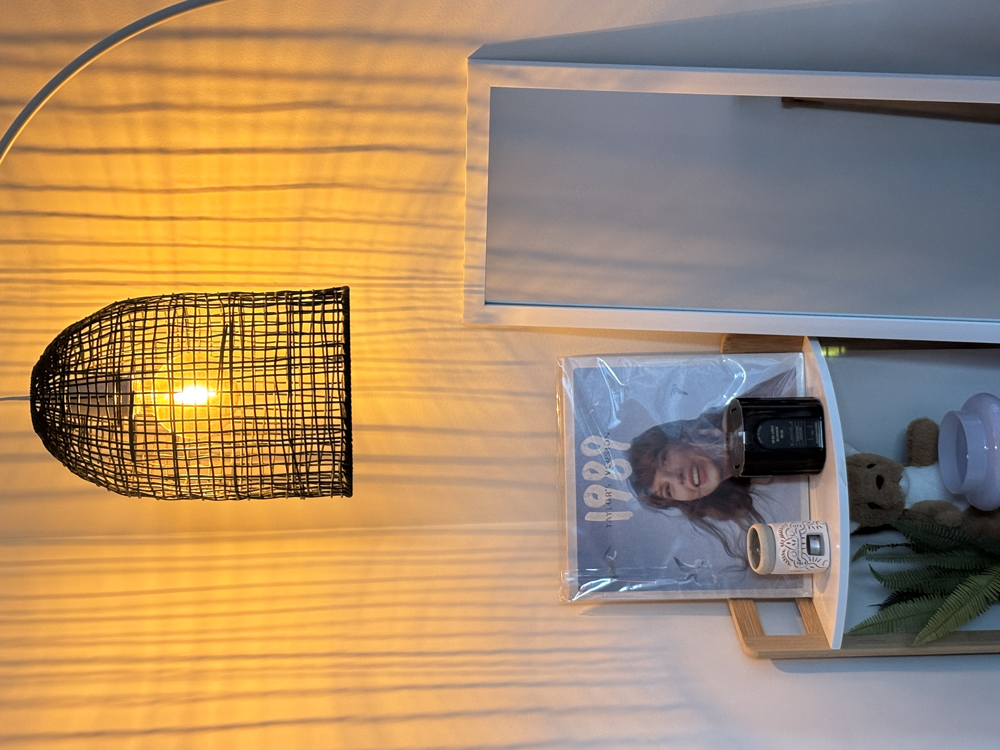
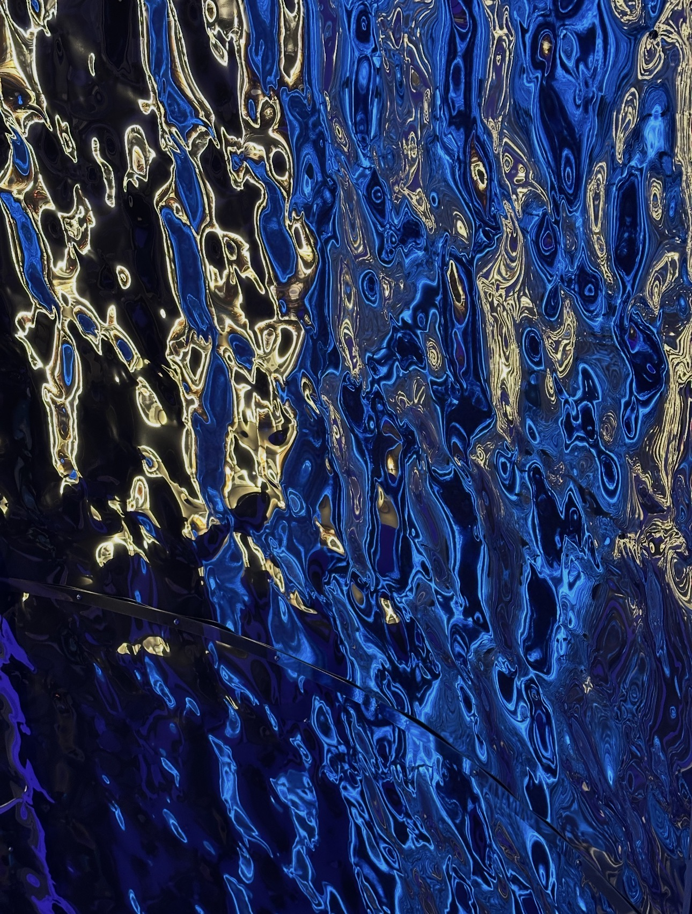
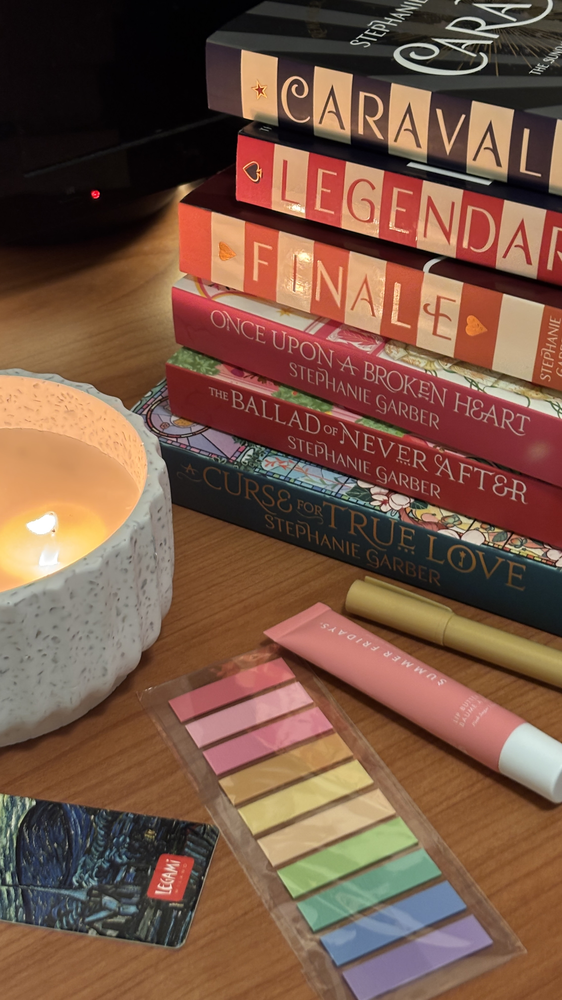

Inside Gallery
Interior Moments
A visual collection of interior details exploring light, framed space, reflection and personal atmosphere.






Inside Gallery
A visual collection of interior details exploring light, framed space, reflection and personal atmosphere.





